引きこもり
引きこもりあるあるとは？
古今東西の色々な引きこもりあるあるをレベルごとにまとめてみました。
引きこもり度
Lv.1
- 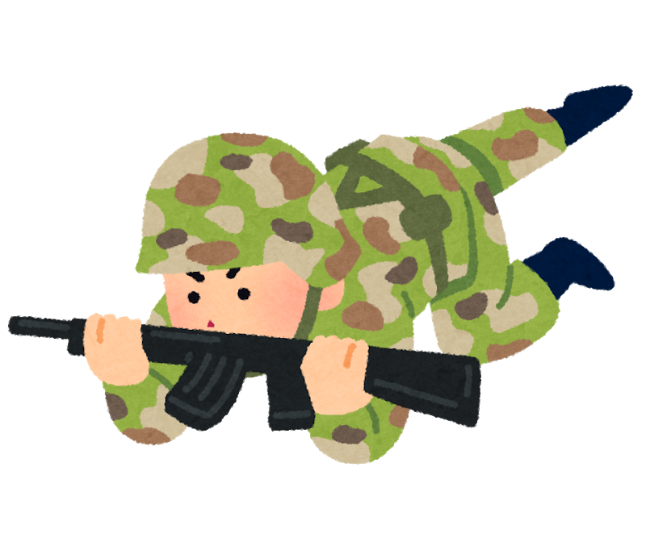
父が居間にいるときは匍匐前進
わかるような気もする。無条件に父親に対して嫌悪感がするので、父親が自分を見てくるだけでもイライラしてくるので、家でもなるべく鉢合わせない様に立ち回る。
- 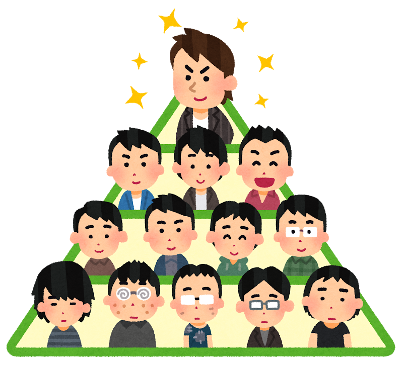
カースト底辺の人
学校っていう弱肉強食の競争社会からあぶれた者たちが多い、イケメンの引きこもりとか見たこと無いから
- 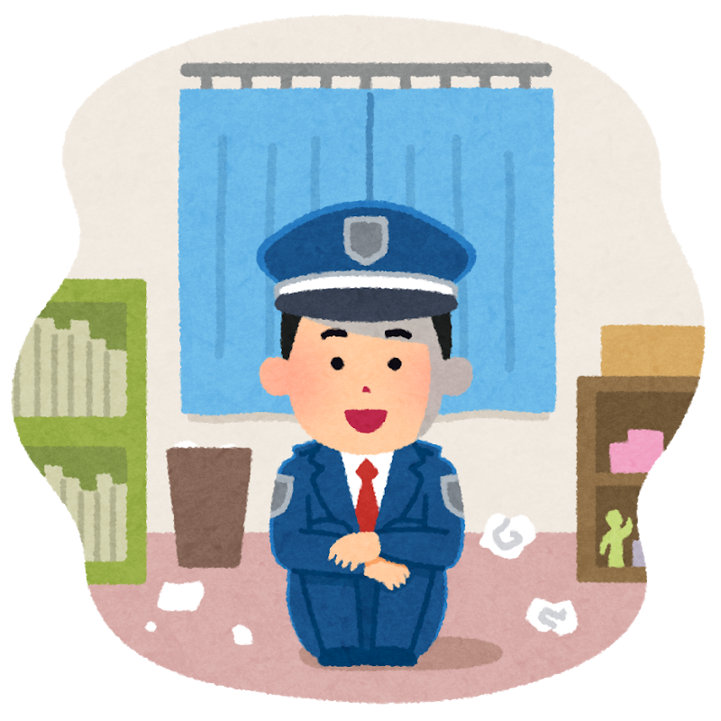
職業:自宅警備員
別に誰からも狙われてないけど毎日、自宅警備している、っていう設定、
- 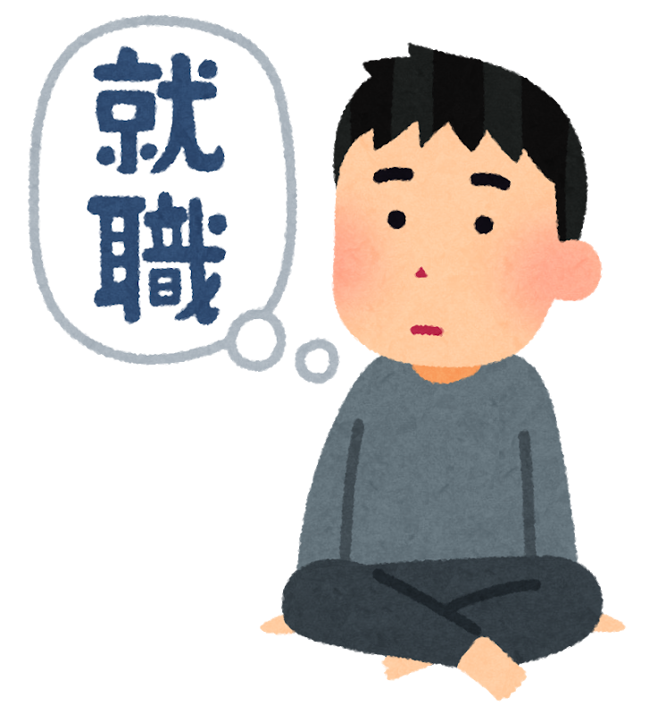
就職のやり方がわからない
就職しろと親に言われても、ガチで何から始めるのかすら分からない。入りたい企業すらない、しょうがない。生まれてから一度も自分から能動的に生きてきたことなんてない人間だから、
引きこもり度
Lv.2
- 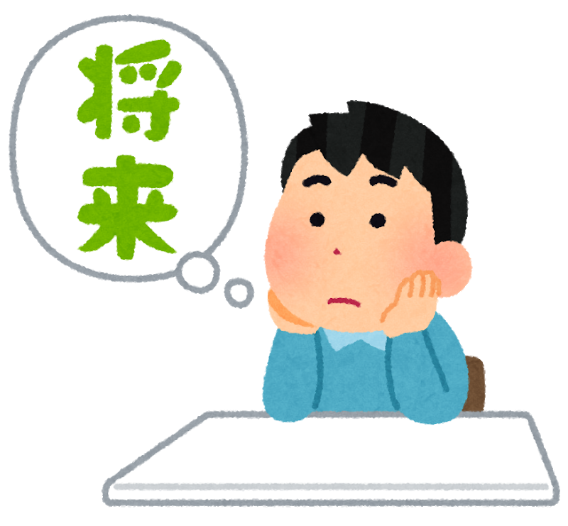
人生計画がない
小学校の時、授業で自分の将来の夢とか目標を訊かれても何も無いタイプの人間だった。むしろプロ野球選手って発表している同級生を鼻で笑って冷笑してた。プロ野球選手w
- 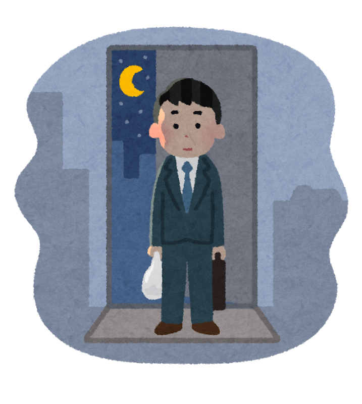
働いても直ぐに辞める
このままじゃいけないと発起して、一応就活し働きだすも仕事に対するモチベーションが低く、コミュニケーションスキルや対人スキルに難があるので直ぐに辞めてしまう。
- 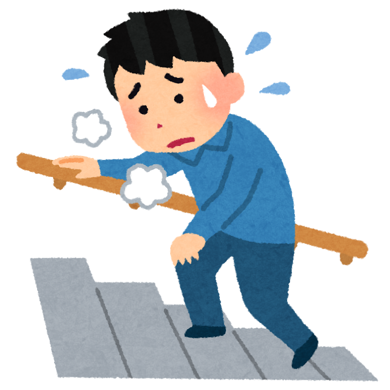
筋力と体力がなくなる。
当たり前体操～♪外に出る予定もないし、運動する習慣もないので必然的に痩せ細る。腹は出てるけど腕は細くあばら骨が浮き出てる餓鬼みたいな気持ち悪い体形になる。
- 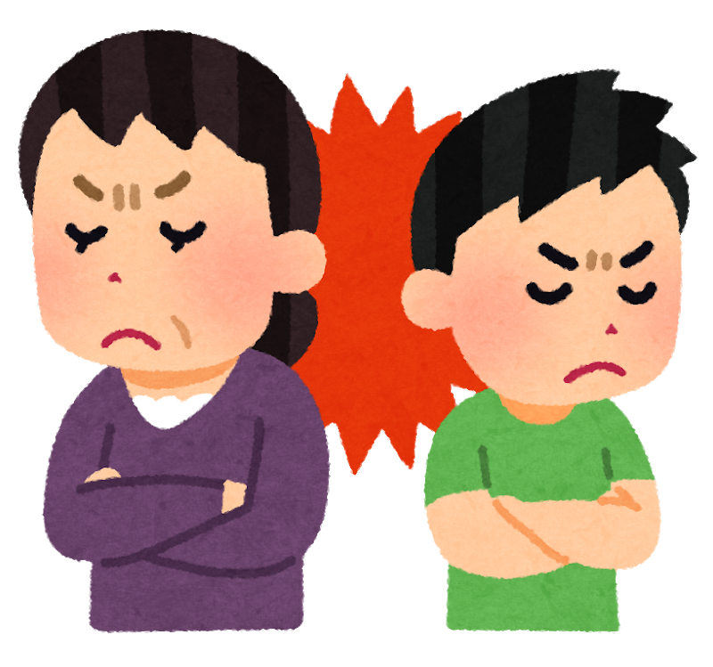
両親とはもちろん不仲
大抵母親が過干渉で父親が不干渉の家庭生まれ、進学や就職など移り変わる時期になると喧嘩しやすい、引きこもりで円満な家庭があるならすごいと思う。
引きこもり度
Lv.3
- 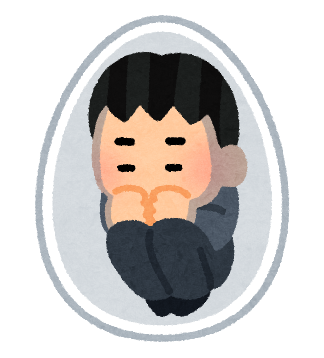
自分の殻に引きこもる
変なプライドを持っているので自分を曝け出す事が出来ないし、恥かくのが怖いので基本行動しない、昔は主体的に動けたけど、今は超受動的な人間になった。
- 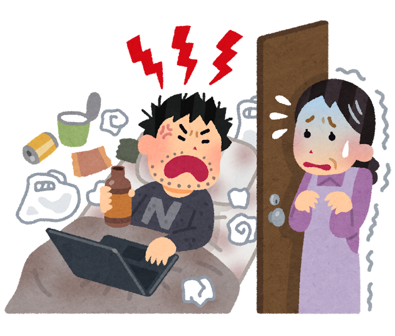
ベットの上で一日が完結
食う寝る遊ぶ、全てある。娯楽ならPCかスマホで一日つぶせるのでとくに苦はない。引きこもり長くやっていると最終的に寝たきりになる。ベットの上で飯食べたり尿ペットボトルまで行ってるのは廃人
- 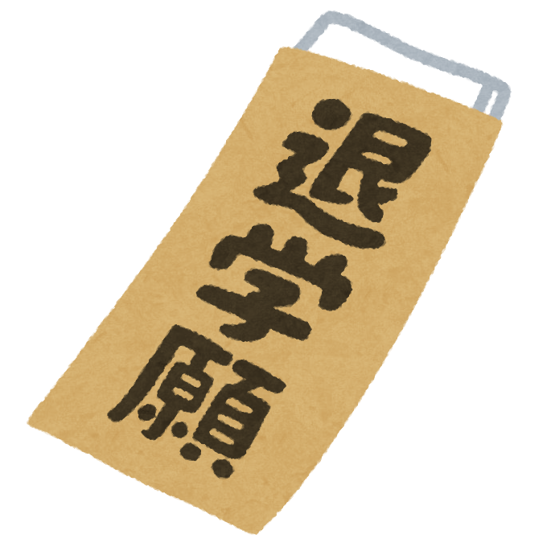
中退・不登校経験者
不登校になっているからには人間関係が良好に築けなかった人が多く自分の殻に閉じこもりたくなるのは自然の流れ外の世界で上手く行かなかったという心の傷が引きこもりになる
- 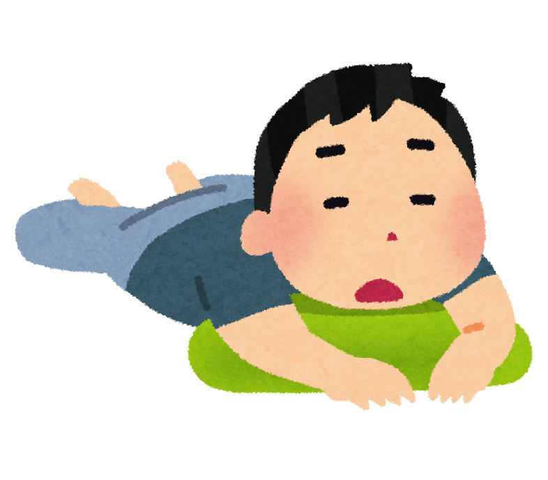
毎日が夏休み
毎日が夏休み、宿題が終わっていない状態の8月31日みたいな感じ、漠然とした焦燥感と将来への不安とか色んな負の感情がぐるぐるしている生き地獄。毎日がつまらない
引きこもり度
Lv.4
- 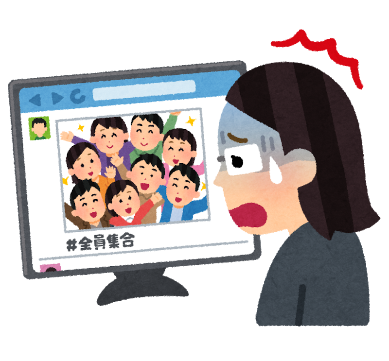
自分だけが招待されてない同窓会
成人式も行かなかったし、同窓会も呼ばれていない、単純にクラスの人とも連絡先交換してないから、普通に呼ばれないそれが当たり前。多分向こう(同窓会)で自分は死亡扱いだと思う
- 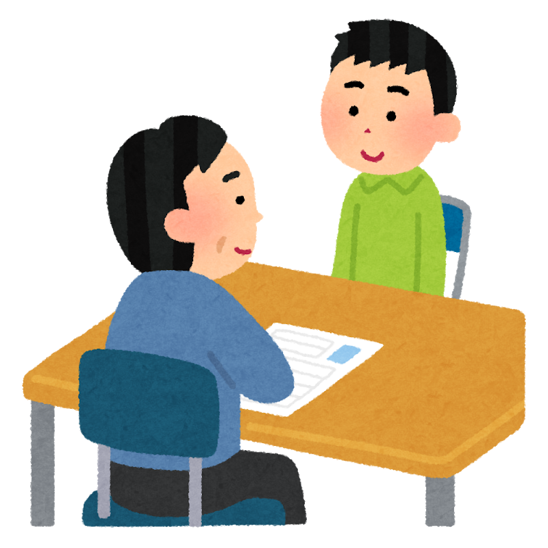
面接が面倒くさいから働かない
働くまでの過程がめんどい、一々履歴書を書くのがめんどいし、面接もめんどい全てが怠い、でも働く意欲はある(矛盾)政府は引きこもりに対しての支援策として面接の無い仕事を斡旋しろ(暴論)
- 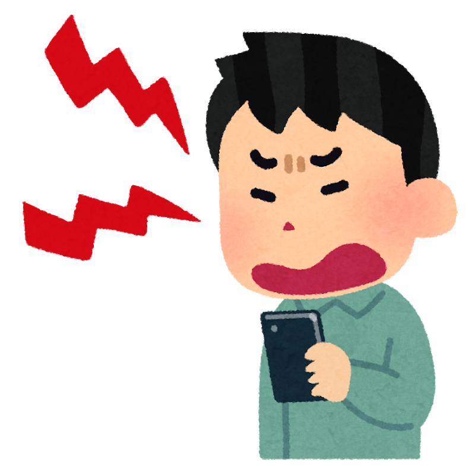
LINEの返信文を考えるのに時間がかかる
基本わかる。SNSでもフォロワーの人からリプ来たらすごい悩む、１時間位悩む、向こうに変に思われたくないので文章の推敲にかなり時間がかかる。メールの返信も時間をかける。
- 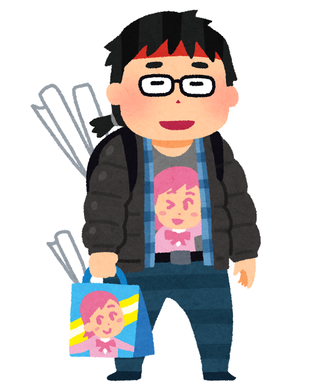
数日同じ服で過ごしている
その程度のレベルはデフォ、ありきたり過ぎる日常、基本誰とも会う予定もないし外にも出ない、風呂も入らないし身体も洗わない髪も切らない顔も洗わない。全てがどうでもいい
引きこもり度
Lv.5
- 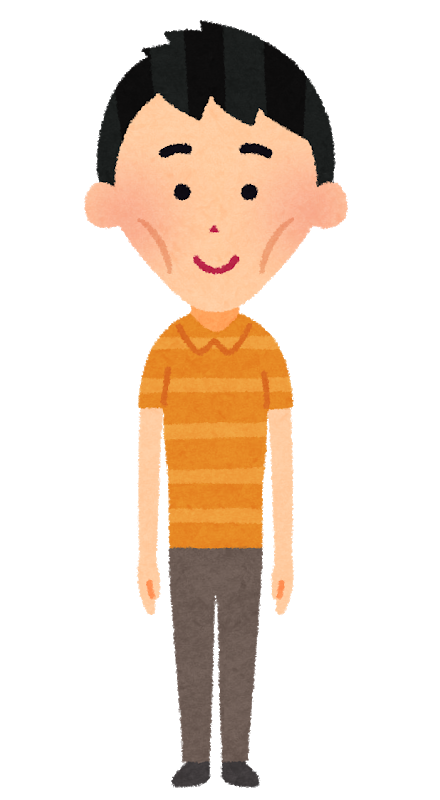
空腹を忘れる
ブッダレベルで断食している。いちいち食事することが面倒くさい。食事に金かける人が理解できない、このまま痩せ細っていって最終的に餓死して即身仏になりたい。
- 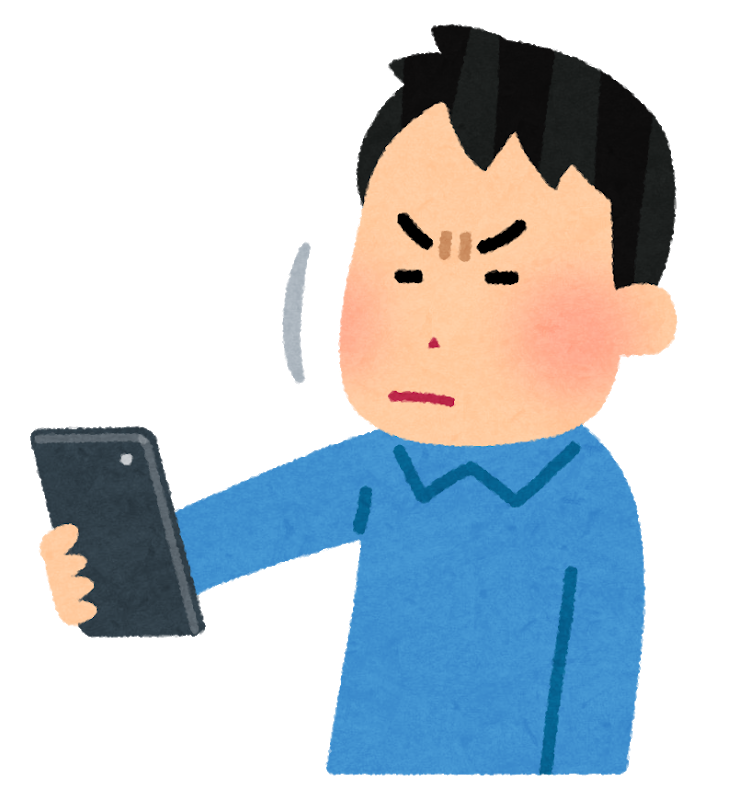
スマホの影響で視力低下と腱鞘炎になる
予定もタスクもないつまらない日々なので、基本スマホいじっている。その時間で勉強するなり資格取得するなり出来たら良いのにと思うけど、しない、寝るときすらもいじっている。
- 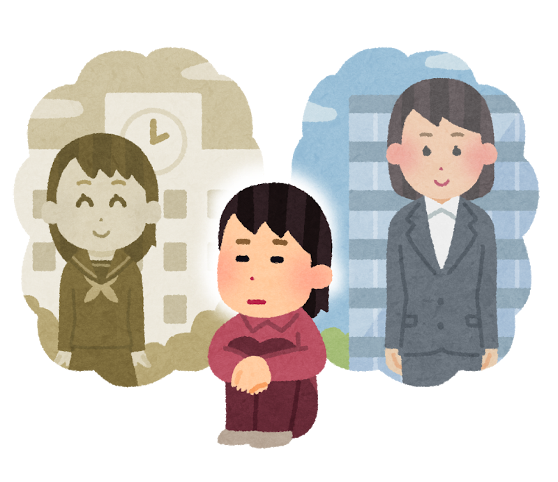
過去の思い出の夢を見る
夢の中の、いつものメンツが未だに中学の時の同級生とかで固定されている。あれ以来俺の人生停滞してんなぁ…って気分になり目覚めが悪いので、夢の更新アップデート早くして欲しい。。
- 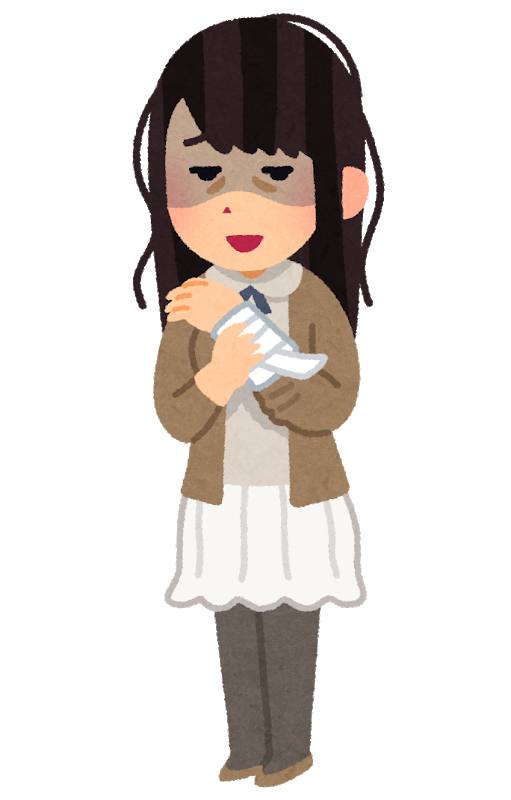
メンがヘラってる
長い期間引きこもって、人との交流断っていると孤独感とか劣等感とか将来への不安で大体の人がメンタルがヘラってる。現実に居場所もないので、ネット漬けの日々を送っている。